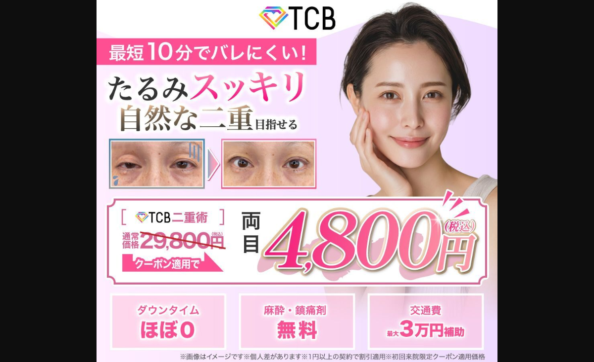
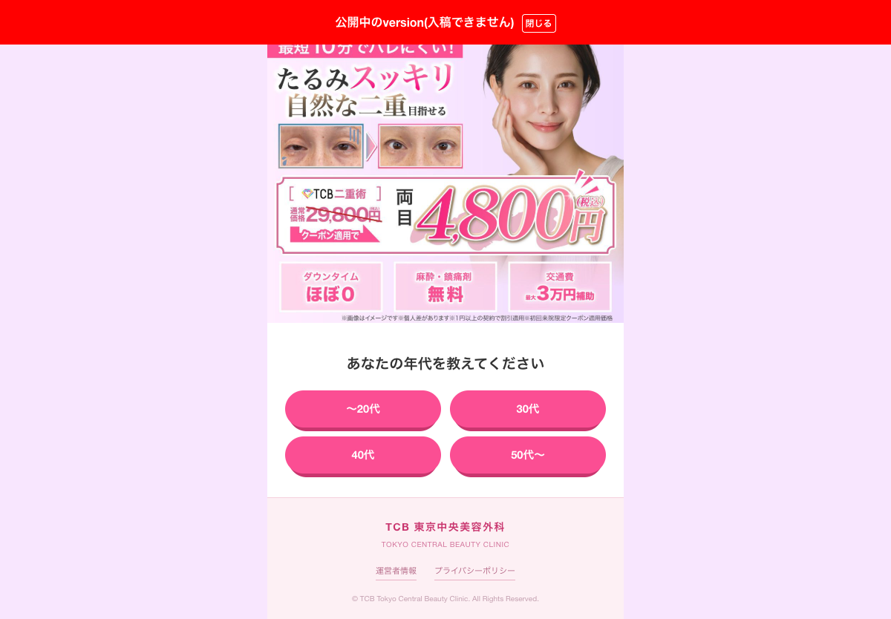
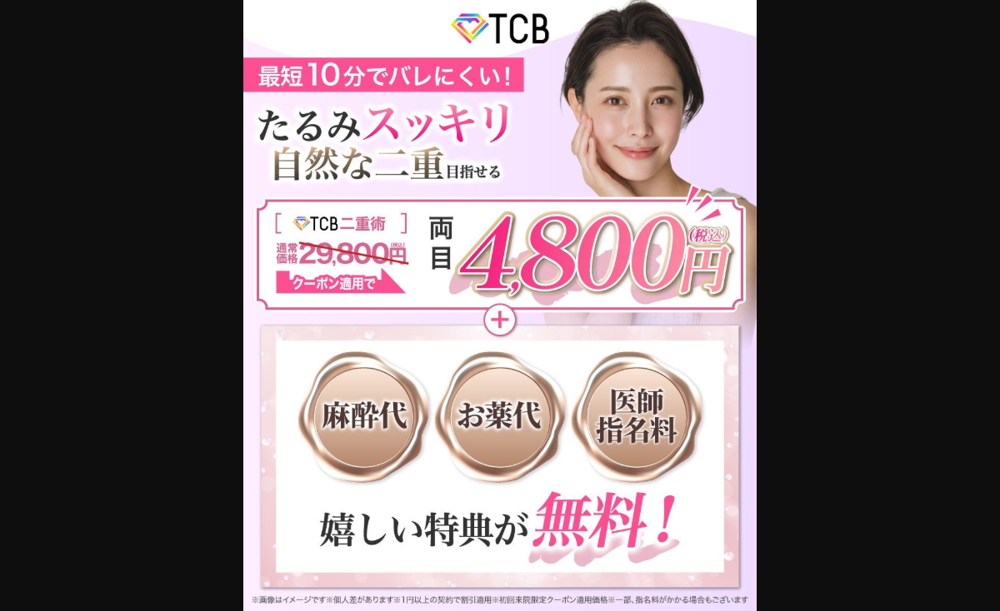
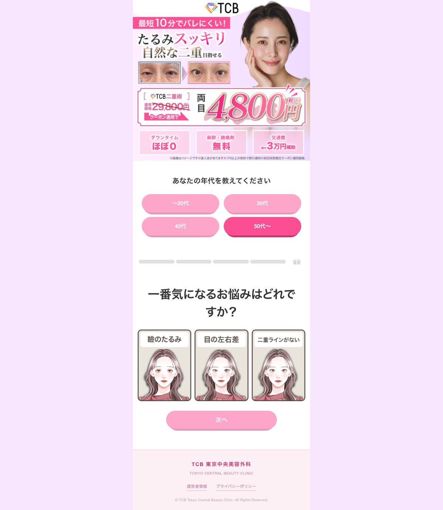
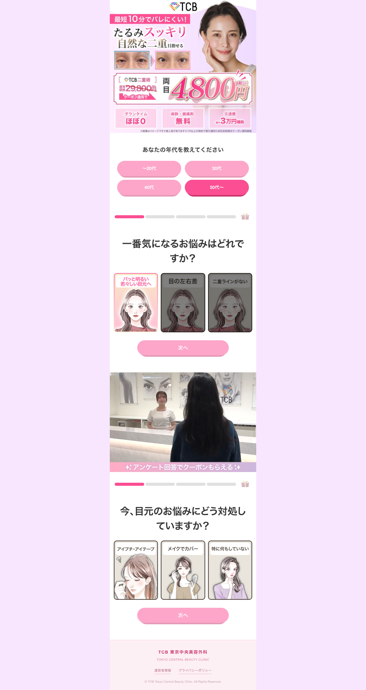
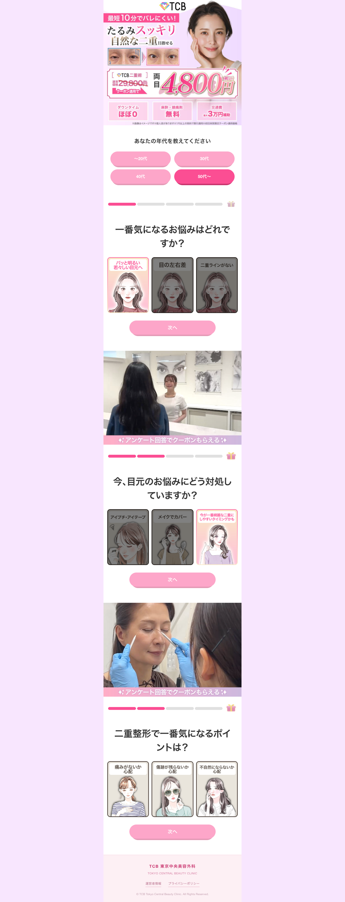
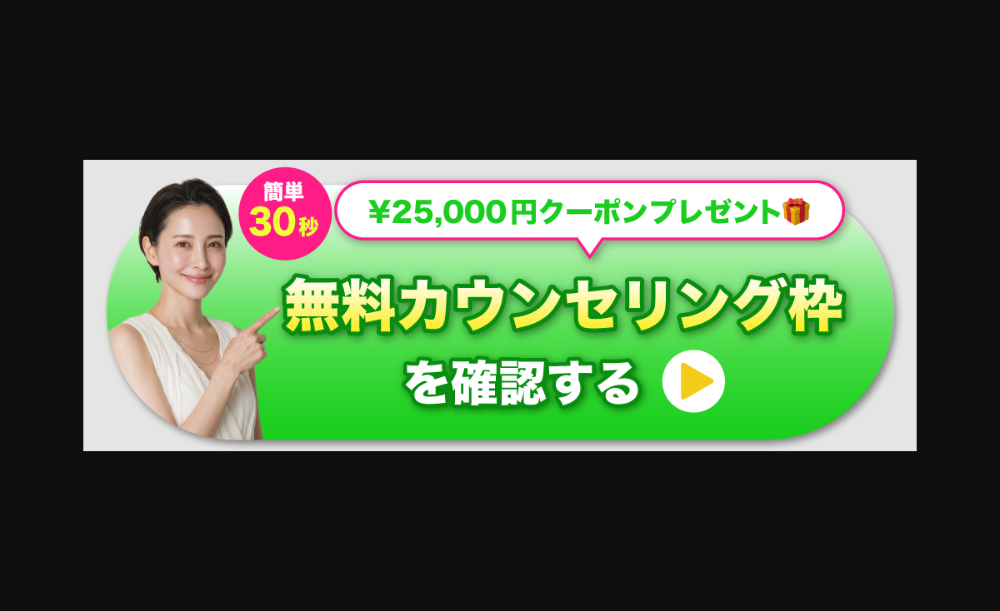

TCB二重術 記事が売れている理由まとめ
対象記事：TCB二重術 女性向けカード回答型アンケートLP。制作判断、構造の大枠、パート別の狙い、横展開時に残すべき勝ち筋を整理。
結論
この記事の勝ち筋は、二重市場ではまだユニークな「カードをめくって回答していくアンケート型動線」を採用しつつ、CV地点が無料カウンセリング予約であることに合わせて、後半に長めの教育パートを追加した点にある。
前半では、読者に悩み・現状・不安・理想を選ばせながら、商材への期待と心理的前向きさを作る。後半では、効果実証、施術不安、料金不安、クリニック信頼、遷移後の行動イメージを順番に潰し、予約行動まで押し上げている。
1. 制作判断
この記事は、美容整形の二重手術ジャンルに対して、ダイエット市場で数ヶ月継続配信されていたジュノビューティークリニックの「カードをめくって回答していくアンケート形式」の動線を横展開したもの。
採用理由は大きく2つある。1つ目は、二重市場に対してこのカード回答型の見せ方がユニークで、既存記事と差別化しやすかったこと。2つ目は、ジュノビューティークリニックで継続配信されていたため、一定の効果が出ている型だと予測できたこと。
ただし、ジュノビューティークリニックの着地点はLINE友だち追加。一方で今回のTCB二重術女性向け動線の着地点は無料カウンセリング予約。着地点の重さが違うため、単にフリップ型動線を真似るだけではなく、無料カウンセリング予約につなげるための教育要素を追加する判断をした。
2. 中の構造の大枠の方向性
型
ベースは、ジュノビューティークリニックで継続配信されていたカード回答型アンケート。読者が質問に答えながら、自分の悩み・現状・不安・理想を選んでいく構造になっている。
ただし、今回のCV地点はLINE追加ではなく無料カウンセリング予約。そのため、単なる診断風アンケートでは終わらせず、回答過程の中で「二重術を受ける理由」や「不安を超える理由」を自然に積み上げる設計にしている。
デザイン
動画広告分析プロのMeta上位記事たちとデザイントーンを差別化するため、過剰な装飾や派手な煽りを抑えた。全体としてはフラットで、色数や演出も市場よりミニマル。公式感・清潔感・安心感が出るデザインに寄せている。
一方で、ただ静的にするのではなく、UX面はジュノの動線よりブラッシュアップしている。進捗バー、何問目かがわかるステータス、回答完了ボタンの色変化、カードタップ時に裏面が表示される演出など、細かい操作感で「答えている感」「進んでいる感」を作っている。
コピー
フォーマットとデザインの新規性で差別化できる前提があったため、コピー自体は大きく新規訴求に振り切っていない。過去に売れていた二重記事の勝ちコピーを踏襲しつつ、AIとの壁打ちで細部を整えた。
コピーの役割は、奇抜さを出すことではなく、既に売れている訴求を崩さず、ユニークな型・デザインの中に自然に載せること。「バレにくい」「自然な二重」「たるみスッキリ」「価格」「無料特典」など、既存勝ち筋を安定して使っている。
3. パートごとの詳細解説
3-1. ファーストビュー



女性モデルは、現状社内のF2以上向け記事で良い反応率を得ている記事で採用されていたAI女性モデルをそのまま採用している。若すぎず、清潔感・上品さ・自然な美容感が出るため、二重術の「自然」「バレにくい」「たるみ改善」と相性が良い。
BAは、ターゲット年齢層に合っていて、かつ広告で反応率が良いものを採用。単に二重幅を見せるのではなく、「まぶたの重さ」「たるみ」「老け見え」が改善されるイメージをFV内で直感的に伝えている。
オファー周りの表現は、ナハトなど四強上位記事のディテールを参考にしている。価格の見せ方、通常価格からの値引き、クーポン適用、特典の並べ方など、ユーザーが一瞬でお得感を理解できる表現に寄せた。
下部の3USPは、クリエイティブのスクリプトとの整合性と、二重術を検討する上でのハードル払拭を意識して選定。「ダウンタイムほぼ0」「麻酔・鎮痛剤無料」「交通費最大3万円補助」で、施術前の不安や面倒さを先回りして軽くしている。
公式感を出すため、TCBロゴは目立つ位置に配置。情報が散らからないようにピンク基調で揃え、ハイライト部分も色を増やすのではなく、グラデーション、塗り、ドロップシャドウで強弱をつけている。
3-2. フリップカード



フリップカードの狙いは、読者が回答しながら解決への期待感を高めること。表面で悩みや不安を選び、裏面でそれに対する前向きな情報を見ることで、「自分には無理かも」「整形は怖いかも」という認識を少しずつポジティブに変えていく。
また、質問ヘッダーにLINE風の様子、カウンセリング、施術の様子の挿絵を添えることで、商材に対して心理的にポジティブになれる。さらに、CV後に進む行動のイメージを膨らませ、予約や遷移後の入力に対する心理的ハードルを緩和している。
カード型を横展開する際のポイントは、単に「めくるUI」を真似ることではない。質問ごとに、表から裏を見ることで生じる心理効果を、横展開先の商材の悩み・不安・解決内容に合わせてどれだけ高精度に設計できるかが重要。
3-3. 最初のクロージング

従来のアンケートよりも、フリップカード内で商材に対するポジティブ教育や行動イメージの形成ができているため、最初のクロージングでは端的に価格を表示している。
具体的には「25,000円OFFクーポン」「予約の案内」「麻酔代・薬代無料などの軽いサブウェイのメリット」を添えて、一度CTAボタンでクロージングをかけている。
ただし、それだけでは予約までの動機づけや不安払拭が十分でない可能性がある。特に無料カウンセリング予約はLINE追加よりも心理的ハードルが高いため、ジュノビューティークリニックと異なり、この後に長い教育パートを用意している。
3-4. 詳しく見るボタン後の共感パート
詳しく見るボタンを押した後は、まず読者の悩みシーンへの共感を短めに置いている。ここまで記事を読んだ時点で、読者は商材に対してかなり心理的に前向きであるという前提があるため、長く悩みを煽り直すのではなく、一枚画像で完結させている。
役割は、強い教育というより、次の解決策紹介に入る前の感情の再接続。「そうそう、自分もこれが嫌だった」と読者に再認識させる。
3-5. 解決策紹介・効果実証
共感の後は、基本的なセールスライティングの構文に沿って、解決策を提示している。まずBAで効果を視覚的に実証し、文言では「目元に余裕」などの施術後ベネフィットを提示する。
ここでは、単に二重になることではなく、目元の印象が変わることで得られる未来を見せて、読者の課題解決欲求をもう一段強めている。
3-6. TCBが選ばれる理由・不安払拭
読者が記事に没入したと仮定し、ここからはTCBが選ばれる理由の再教育に入る。二重術に心理的には前向きだけど、まだ残っている施術・料金への不安を払拭するパート。
| 扱う不安 | 見せ方 | 狙い |
|---|---|---|
| 不自然にならないか | バレない自然な仕上がり | 整形感が出ることへの不安を払拭する。 |
| 痛み・ダウンタイムが怖い | 痛み・ダウンタイムほぼなし。髪の毛と糸の細さを比較。 | 髪の毛より細い糸という直感的な比較で、痛みのイメージを軽くする。 |
| 押し売り・高額請求が怖い | 同意のない追加料金一切なし。笑顔のスタッフとのカウンセリング風景。 | お金以上に読者が感情的に恐れている「騙されるかも」「強引に契約されるかも」を潰す。 |
| 糸が取れたらどうなるか | 安心の再施術保証付き。保証書・チケット風デザイン、明朝体。 | 糸が取れる可能性への不安を、保証の安心感で上書きする。 |
このパートの役割は、「効果がありそう」から「自分でも受けられそう」へ心理を進めること。
3-7. 社会的証明
効果実証と不安払拭の後は、クリニック自体を信用してもらうパートに入る。セールスライティング上、施術への興味だけでなく「このクリニックなら任せても大丈夫」と思ってもらうことが重要。
そのため、TCBの定量的・社会的な証明となる指標を4つ配置している。デザインは、受賞感・権威感が一瞬で伝わるように、黄金色をあしらったエンブレム調で情報を提示している。
3-8. 予約手順・クロージング
信頼形成の後に、改めて予約手順を提示してクロージングをかけている。読者がこれから何をすればいいのかを具体的にイメージできるようにし、次の行動を明確化している。
3-9. FAQ・チャットボットLP遷移後のイメージ
その後に、よくある質問と、遷移後のクライアント側チャットボットLPでどのように進むのかがイメージできるパートを配置している。
前段で「受けてもよさそう」と思わせた後、ここでは「ボタンを押した後にどんな画面へ進むのか」「チャットボット上で何を聞かれるのか」「どんな手順で予約に近づくのか」を具体的に見せる。
予約前の最後の障壁は、施術不安だけではなく、遷移後の行動手順が見えないこと。このパートは、読者の頭の中でチャットボットLP遷移後の疑似体験をさせ、クリック後の不安を下げる役割を持っている。
3-10. 最終ベネフィット・限定性
最後は、読者が一番手に入れたい未来像を改めて画像で提示して締めている。ここで見せているのは、施術内容ではなく、悩みが解決した後の未来。目元に自信が持てる、若く見える、自然な印象になれる、という課題解決後の状態に対して、心理的に最大限前向きにさせている。
さらに最後に「このページを閉じると良いことが表示されなくなるかもしれません」という損失回避の表現を置いている。限定性と機会損失を想像させることで、迷っている読者に「今動いた方がいい」と思わせ、最後の行動を促している。
4. 売れている理由の統合
5. 横展開する時に残すべき要素
- カードをめくるUI自体ではなく、「表から裏を見た時に起きる心理変化」を商材ごとに設計する。
- CV地点が軽い場合は短いクロージングでもよいが、予約・購入など重いCVでは後半教育を追加する。
- 市場で見慣れているデザインと差別化する一方、コピーは既存の勝ち訴求から大きく外しすぎない。
- 不安払拭は機能説明だけでなく、読者が感情的に恐れていることまで潰す。
- 最後は理想未来と損失回避を置き、行動する理由を明確にする。
作成日：2026-05-30 / 保存場所：LP制作ディレクトリ